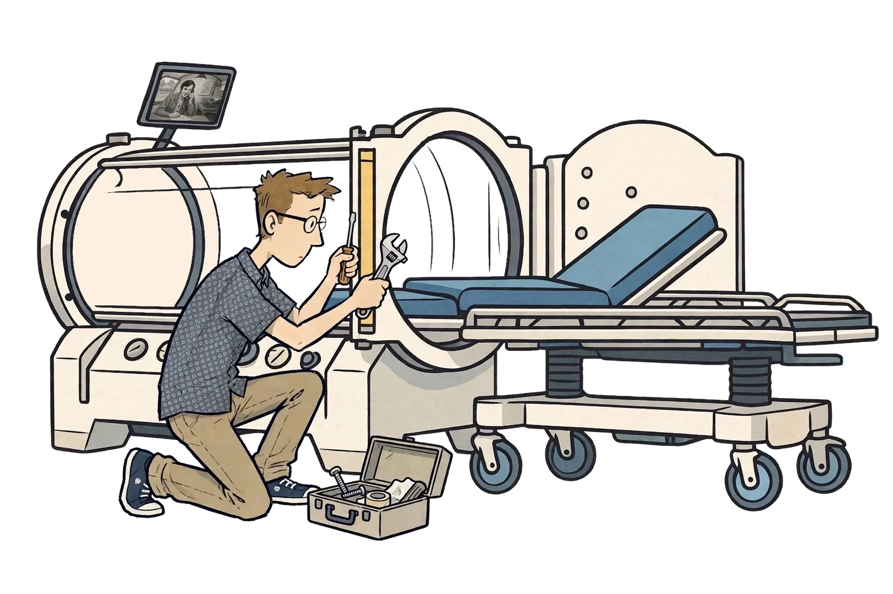
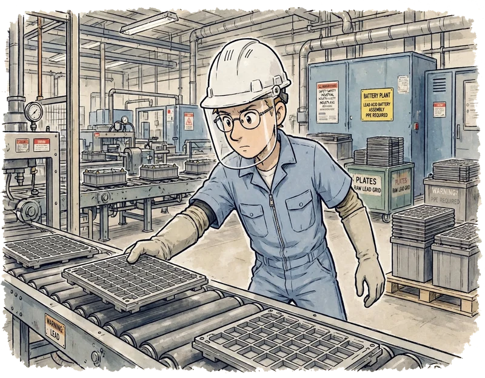
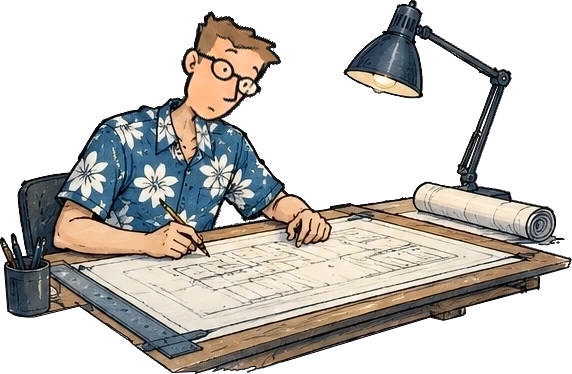
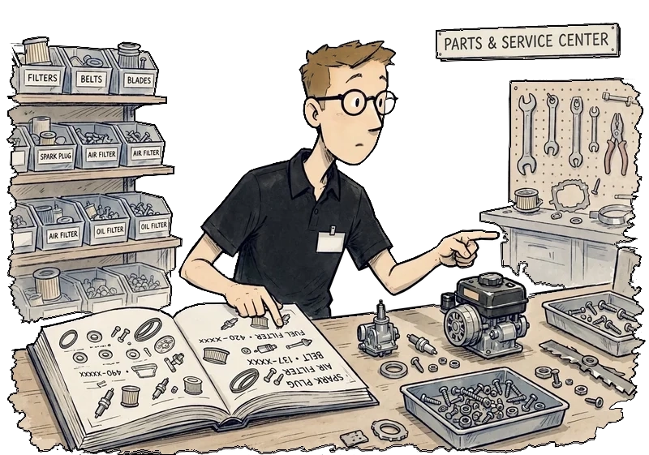

Matthew A. Davis, MBA
Operations & Corporate Development · Systems Design · Strategic Communications · Independent R&D
Full Record · Present — 2004
Career History
Vice President of Administration & Corporate Development
Shared Health Services, Inc. — Johnson City, Tennessee
Corporate Development & Growth
- Helped drive the company’s post-pandemic turnaround — back to profitability within two years of a $250K shortfall and the loss of half its contracts, with a corporate staff of four.
- Rebuilt the business model around its own IP — compliance, documentation and training systems — replacing per-procedure staffing contracts with flat-fee partnerships and near-zero marginal delivery costs.
- Built the financial model used to underwrite partnerships — combining CMS reimbursement rules, hospital-specific wage adjustments, physician fee schedules, zip-code demand forecasts and historical staffing data.
- Built the company’s first market-intelligence and demand-generation engine — by hand first, then automated:
- A national census of every target facility class (hospital systems, independent hospitals, multispecialty physician groups, group purchasing organizations, and every critical access and long-term acute care hospital in the country), mapped against competitor presence site by site, down to each facility’s executive team by name and role.
- A daily lead sheet, built by resolving weekday website analytics to individual facilities and scoring their engagement depth.
- Daily targets, content assignments and prospect research for sales and marketing, directed from that sheet.
- Closed the majority of the company’s consulting partnerships — hospital and physician-group accounts across multiple states, from initial contact to signed multi-year contract.
- Coordinated the company’s response to a multi-period IRS Employee Retention Credit examination — assembling financial and payroll records for CPA and legal review.
Regulatory Intelligence & Partner Enablement
- Monitored CMS, Medicare contractor, FDA and accreditation changes — regulations, transmittals and coding updates, translated into partner-specific guidance across Medicare jurisdictions.
- Produced up to 18 targeted partner communications a day — adapted for audiences from hospital executives to clinical technicians, and filtering out what didn’t warrant sending.
- Built partner chargemasters and year-over-year payment comparisons — HOPPS and physician fee schedule, from published rates and each facility’s wage index — plus a denial reference mapping 44 Medicare HBOT denial codes to the documentation that prevents them.
- Instituted a verification-first editorial and regulatory review process — catching coding, jurisdictional, policy and reporting errors before they reached partners or publication.
Operations & Administration
- Coordinated corporate and partner-site operations — standardizing the recurring quarterly executive reviews.
- Authored the organization’s Joint Commission and DNV survey-preparation guide — five readiness instruments grounded in NFPA 99 references and documented survey questions from partner hospitals in multiple states.
- Conducted the organization’s annual strategic ten-point audit review on site — alongside clinical reviewers, evaluating facility readiness, chamber safety, documentation, and billing and coding practices; reaching hospitals by small aircraft and ten-hour drives.
- Built a standardized library of clinical instruments — screening tools, trackers, quick references and patient-education materials, each sourced to the rule it rests on and deployable at any partner facility without editing.
- Ran HR across a multi-state workforce — recruitment, onboarding, hospital credentialing, employee relations, investigations and compensation.
- Wrote and maintained the organization’s controlled documentation framework — corporate policies, clinical protocols, care algorithms, operational procedures, competency standards and the employee handbook.
Technology & Security
- Administered company-wide IT — systems, endpoints, networks and end-user support across a national footprint.
- Designed and built the company’s partner portal infrastructure — co-branded, access-controlled libraries of licensed clinical, operational, regulatory and training resources, anchored by two interactive documentation algorithms that link each stage of care, from first encounter through ongoing treatment, to its documentation, coding and reimbursement requirements.
- Led incident response to a weeks-long cyberattack on company leadership — containing an account compromise and a $43K fraudulent-wire attempt with zero financial loss, then implementing mandatory MFA and company-wide security training.
Communications, Brand & Education
- Designed and built the corporate website and its nearly seventy-post clinical blog in-house — three 2025 recognitions: Healthcare Digital Marketing Awards Gold, Digital Health Awards Merit, MarCom Honorable Mention.
- Built and ran the company’s communications function — corporate brand, clinical content, partner education, and a weekly staff newsletter written, designed and illustrated for four years.
- Developed WOUNDWISE, a 23-unit partner-enablement program — original artwork, platform-specific content kits and staff-ready publishing guidance, deployed under partners’ own brands.
- Designed two browser-based clinical training games — 60 expert-reviewed scenarios — alongside an eight-deck, roughly 219-slide onboarding and education curriculum.
2026
Master of Business Administration
Western Governors University
AUG 2019
B.S., Management Information Systems
Concordia University Chicago — River Forest, Illinois
Senior project: Creating a Way to Track Nonconforming Parts During the Heat Treatment Process — proposing an algorithm over existing furnace data-acquisition systems to identify nonconforming material before it leaves the process.
2019
Heat Treat Lab Technician — Tier Two Certified
Meritor, Inc. — Morristown, Tennessee
Metallurgical quality control on heat-treated drivetrain components bound for commercial freight and military tactical wheeled vehicles — three-gas analysis, lab hardness, bainite levels, effective case depth, retained austenite and microstructure testing — alongside industrial-furnace reliability. Authored departmental work instructions; programmed the department’s five-axis saw and CNC equipment.
Also ran the department’s technology: maintained its computer systems and lab instrumentation — hardness testers, microscopes, three-gas analyzers — performed the weekly database backup, and handled programming and troubleshooting for the department daily. The IT career began here, three years before the title existed.
AUG 2016

WorkLead Maintenance / Draftsman
Shared Health Services, Inc. — Johnson City, Tennessee
Drafting, general maintenance, carpentry, and designing new wound care and hyperbaric centers.
MAY 2016
A.A.S., Industrial Technology
Northeast State Community College — Blountville, Tennessee
Programming and robotics, quality management theory, computer numerically controlled machines, quality and inspection, automation and quality, materials and manufacturing processes, Master CAM, machine tool operations.
MAY 2014
Organ Builder
R.A. Colby, Inc. — Johnson City, Tennessee
Pipe organ construction and installation: wiring and soldering, relay installation, woodworking, leatherwork, engraving, winding, tuning, keyboard regulation, CNC operations, chest-work installation, design, finishing and troubleshooting. Ended for lack of work.
FEB 2013

WorkLead Trainer / Pasting Catcher
Exide Technologies — Bristol, Tennessee
Oversaw training and scheduling for the catching department; catching, inspecting and loading manufactured battery plates into a curing oven. LEAN and 5S operations within the department. Ended when the plant closed permanently.
NOV 2010

WorkDraftsman
Shared Health Services, Inc. — Johnson City, Tennessee
Computer layout and design of wound care and hyperbaric medicine centers for contracted hospitals. Ended when the contracts completed.
AUG 2009
Diploma, Maintenance / Millwright Mechanic
Tennessee Technology Center — Elizabethton, Tennessee
Installation, alignment, leveling and repair of industrial equipment and machinery; blueprint reading; precision measurement and caliper work; soldering and wiring code.
APR 2009

WorkService Technician / Sales Associate
Sears Parts & Service Center — Johnson City, Tennessee
Customer service calls, diagnosing merchandise needing repair, floor presentation and general sales. Ended when the store closed permanently.
High School Diploma
Science Hill High School — Johnson City, Tennessee